manjaro配置
前言
从manjaro的U盘启动设置开始，介绍manjaro系统的整个安装、配置过程
制作启动U盘
在这里顺便介绍一些系统启动、磁盘分区的相关基础知识，最后根据这些知识，完成启动u盘的安装
系统启动
系统启动，本质上是识别并读取存储上的数据信息，并完成操作系统的加载，最后将计算机的控制权转交给操作系统。
因此，系统启动的过程，即首先区分存储(往往是硬盘或U盘)的分区，其次执行启动分区的代码，完成系统分区中的操作系统加载，最后将计算机的控制权转交即可。。
就目前来说，系统启动有两种常用的模式——Legacy mode和UEFI mode
Legacy mode(BIOS/MBR)
Legacy mode，即通过MBR/BIOS进行引导的传统模式。BIOS只能识别设备，无法识别分区和文件信息。因此对应的引导的流程如下：
- 从ROM执行BIOS代码进行自检
- 读取主引导记录(MBR) ：即按照指定的设备顺序，读取设备的第一个扇区
- 如果其最后两个字节为55AAH，则读入该扇区，该扇区中包含设备的分区信息。之后将计算机控制权交给该主引导扇区的引导程序即可。
- 如果不相等，则继续尝试其他设备
这里借鉴知乎前辈的图，给出主引导扇区的格式
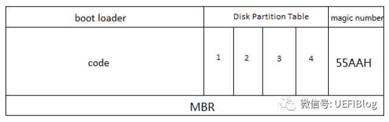
上面的图片很清晰的说明了Legacy mode下区分存储分区的方式，则当读入主引导分区并将计算机控制权交给引导程序后，可以获取分区情况，从而可以继续载入启动分区的代码，最终加载系统分区中的操作系统。这里同样借用知乎前辈的图如下所示
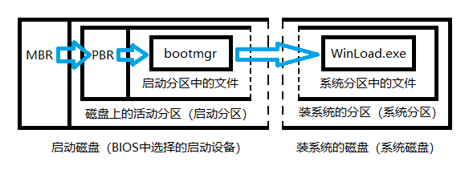
UEFI mode(UEFI/GPT)
UEFI mode，实际上是Legacy mode的替代品。与Legacy mode不同的是，UEFI mode不仅可以识别设备，其同时可以识别ROM、分区表和文件系统。因此对应的引导流程如下：
- 运行ROM中的Pre-EFI初始化模块进行自检
- 加载位于ROM中的DXE(Driver Execution Environment)
- 枚举并加载位于各个设备ROM中的设备驱动，从而可以识别所有的设备信息
- 对磁盘设备，使用ROM中驱动识别磁盘上的
MBR或GPT(GUID Partition Table)分区表，从而获取磁盘的分区信息 - 对于每个分区，使用ROM或EFI系统分区中的文件系统驱动，从而完成分区中文件系统的加载。
- 将计算机控制权交给EFI系统分区的引导程序即可
实际上MBR和GPT都从磁盘的第一个扇区开始，其中GPT分区表的格式如所示
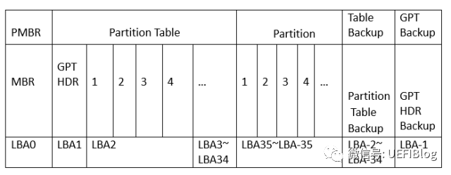
可以看到，如果主板不支持UEFI，则其还是可以通过PMBR结构，实现类似于Legacy mode的引导；否则，其通过Partition Table，完成分区的识别，从而通过文件系统驱动，获取ESP分区的指定引导程序并完成引导，如下所示
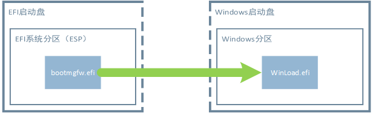
总结
这里再说一下个人的理解——实际上Legacy mode和UEFI mode本质没有区别，都是加载引导程序，从而去引导操作系统的加载。其区别在于
- ROM中的BIOS无法识别设备上的分区、文件等数据。因此将引导程序放在主引导扇区的固定位置，则BIOS将计算机的控制权转交给该引导程序。而引导程序可以通过读取设备的mbr分区表，完成操作系统的加载
- ROM中的UEFI有相关的驱动，因此其可以识别分区、文件等数据。因此其通过读取设备的gpt分区表，完成操作系统的加载，在此之前无须转交计算机控制权。
制作manjaro启动U盘
这里我们分别构造适用于Legacy mode引导和适用于UEFI mode引导的manjaro启动u盘
适用于Legacy mode引导
- 首先，按照前面的分析，我们在磁盘上创建MBR分区表，实现磁盘的分区
1 | sudo fdisk /dev/sdX |
- 接着，向系统分区写入相关的操作系统数据
1 | sudo pacman -S grub |
- 最后，将引导程序写入主引导扇区并完成其他设置即可
1 | sudo grub-install --target=i386-pc --boot-directory=/mnt/usb/boot /dev/sdX |
这里由于manjaro镜像中已经有相关的配置文件boot/grub/grub.cfg，因此不需要在配置。此时，已经完成适用于Legacy mode的启动u盘
适用于UEFI mode引导
由于UEFI mode会替代Legacy mode引导模式，因此这里同样给出适用于UEFI mode的引导
- 首先，我们在磁盘上创建gpt分区表，实现磁盘的分区。这里需要说明的是，UEFI mode引导，其会在EFI分区(EFI system partition)中查找引导程序，因此一定需要有EFI分区/ESP
1 | sudo fdisk /dev/sdX |
- 接着，向EFI分区中写入操作系统相关数据
1 | sudo mkdir -p /mnt/{iso,usb} |
- 最后，将引导程序写入EFI分区，并完成相关的配置即可
1 | sudo grub-install --removable --no-floppy --target=x86_64-efi --boot-directory=/mnt/usb/boot --efi-directory=/mnt/usb |
这里由于manjaro镜像中已经有相关的配置文件boot/grub/grub.cfg，因此不需要在配置grub。此时，已经完成适用于UEFI mode的启动u盘
系统配置
换源
在konsole中输入如下bash命令1
sudo pacman-mirrors -i -c China -m rank && sudo pacman -Syy
然后从弹出的框中选择一个最好的源即可
安装yay
manjaro除了pacman以外，yay同样是重要的一个软件安装途径，如下进行安装和设置1
sudo pacman -S yay && yay --aururl "https://aur.tuna.tsinghua.edu.cn" --save
yay镜像有连接次数限制，因此有时需要恢复成原始资源网站，即1
yay --aururl "https://aur.archlinux.org" --save
安装neovim
使用neovim作为系统的文本编辑器，在终端输入如下命令
1
sudo pacman -S neovim xsel && sudo ln -sf /usr/bin/nvim /usr/bin/vi && mkdir ~/.config/nvim && /bin/bash -c 'echo "set clipboard+=unnamedplus\nlet g:python_recommended_style = 0" > ~/.config/nvim/init.vim'
分辨率
系统dpi
点击屏幕左下角的application launcher，或者点击Win建，打开System Settings，选择Display Configuration选项，通过设置Resolution和Global scale完成系统分辨率和DPI的设置
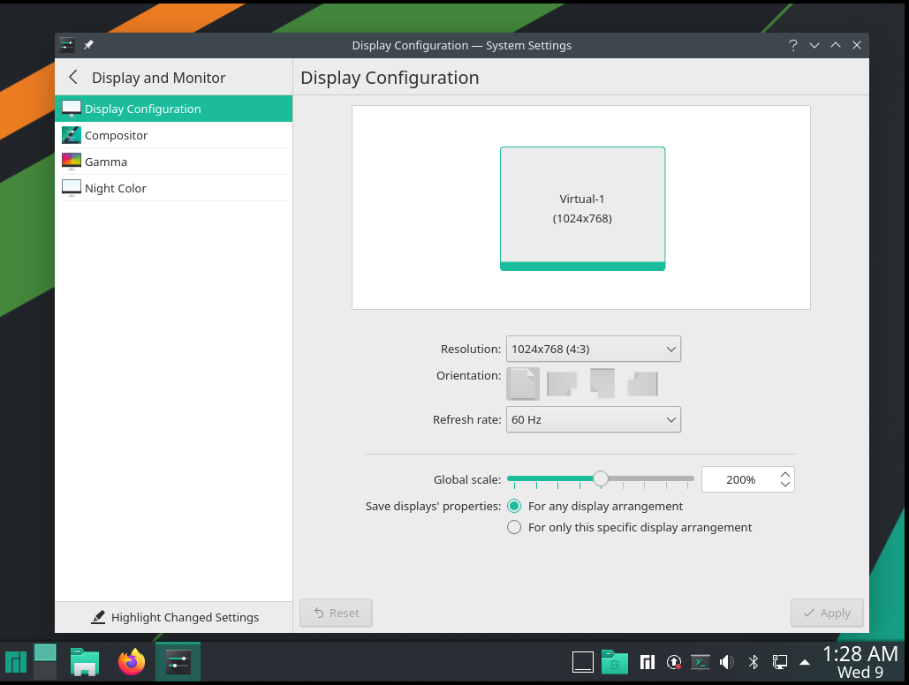
字体dpi
点击屏幕左下角的application launcher，或者点击Win建，打开System Settings，选择Appearance => fonts选项，通过设置General、Fixed width、Small、Toolbar、Menu和Window title以及Force font DPI，完成系统中字体DPI的设置
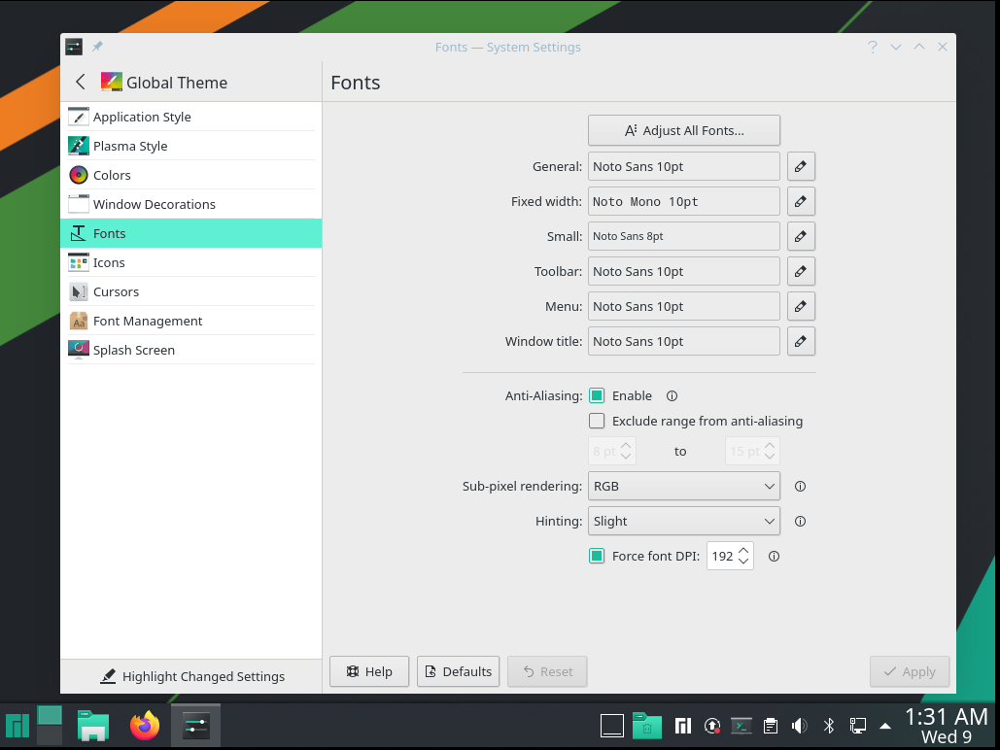
登录窗口dpi
即manajaro登录界面的dpi，这里通过编辑sddm的设置文件——即\etc\sddm.conf完成，添加或修改如下项的值
1 | [Wayland] |
安装输入法
下载输入法
在konsole中执行如下bash命令1
sudo pacman -S fcitx5-im fcitx5-rime
通过 ~/.pam_environment 配置环境变量，写入如下内容1
2
3
4
5GTK_IM_MODULE DEFAULT=fcitx
QT_IM_MODULE DEFAULT=fcitx
XMODIFIERS DEFAULT=@im=fcitx
INPUT_METHOD DEFAULT=fcitx
SDL_IM_MODULE DEFAULT=fcitx
然后重启更新计算机环境
配置输入法
点击右下角菜单栏的键盘托盘图标，点击设置，添加rime输入法
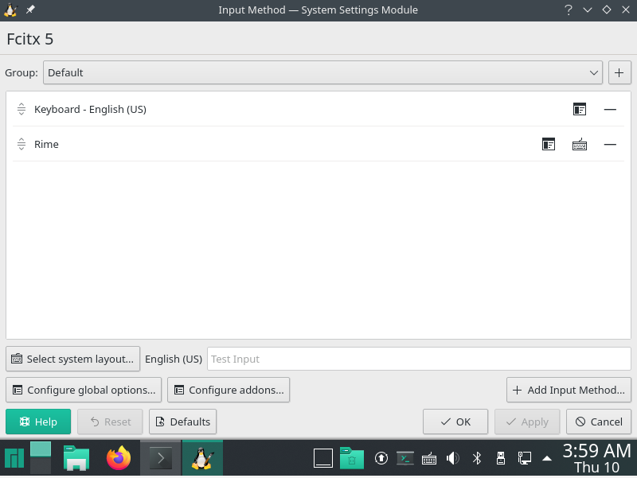
首先创建~/.local/share/fcitx5/rime/default.custom.yaml，并输入如下内容
1
2
3patch:
schema_list:
- schema: luna_pinyin_simp
接着创建~/.local/share/fcitx5/rime/luna_pinyin_simp.custom.yaml，并输入如下内容1
2
3
4
5
6
7
8
9
10
11
12
13
14
15
16
17
18
19
20
21
22
23
24
25
26
27
28
29
30
31
32
33
34
35
36
37
38
39
40
41
42
43
44
45
46
47patch:
switches:
- name: ascii_mode
reset: 1
states: ["中文", "西文"]
- name: full_shape
reset: 0
states: ["半角", "全角"]
- name: zh_simp
reset: 1
states: ["繁體", "简体"]
recognizer/patterns:
reverse_lookup: "[a-z]*'?$"
punctuator/half_shape:
"," : "，"
"." : "。"
"<" : "《"
">" : ">"
"/" : "/"
"?" : "?"
";" : ";"
":" : ":"
"\"" : "\""
"\\": "、"
"|" : "|"
"`" : "`"
"~" : "~"
"!" : "!"
"@" : "@"
"#" : "#"
"%" : "%"
"$" : "$"
"^" : "^"
"&" : "&"
"*" : "*"
"(" : "("
")" : ")"
"-" : "-"
'_' : ——
"+" : "+"
"=" : "="
"[" : "["
"]" : "]"
"{" : "{"
"}" : "}"
创建~/.config/fcitx5/conf/classicui.conf，并输入如下内容调整输入框的字体设置1
2
3
4
5# 按屏幕 DPI 使用
PerScreenDPI=True
# Font (设置成你喜欢的字体)
Font="Noto Sans Regular 13"
然后切换至rime输入法，随便输入相关信息，并输入 ctrl + ~，切换至 朙月拼音·简化字输入法。最后，点击右下角菜单栏的键盘托盘图标，选择deploy重新部署rime输入法。
然后重启更新计算机环境。
最后点击右下角菜单栏的键盘托盘图标，点击设置，删除Keyboard-English(US)输入法即可
设置konsole
关闭yakuake
即点击屏幕左下角的application launcher，或者点击Win建，打开System Settings，选择Workspace => Startup and Shutdown => Autostart选项，删除yakuake项。
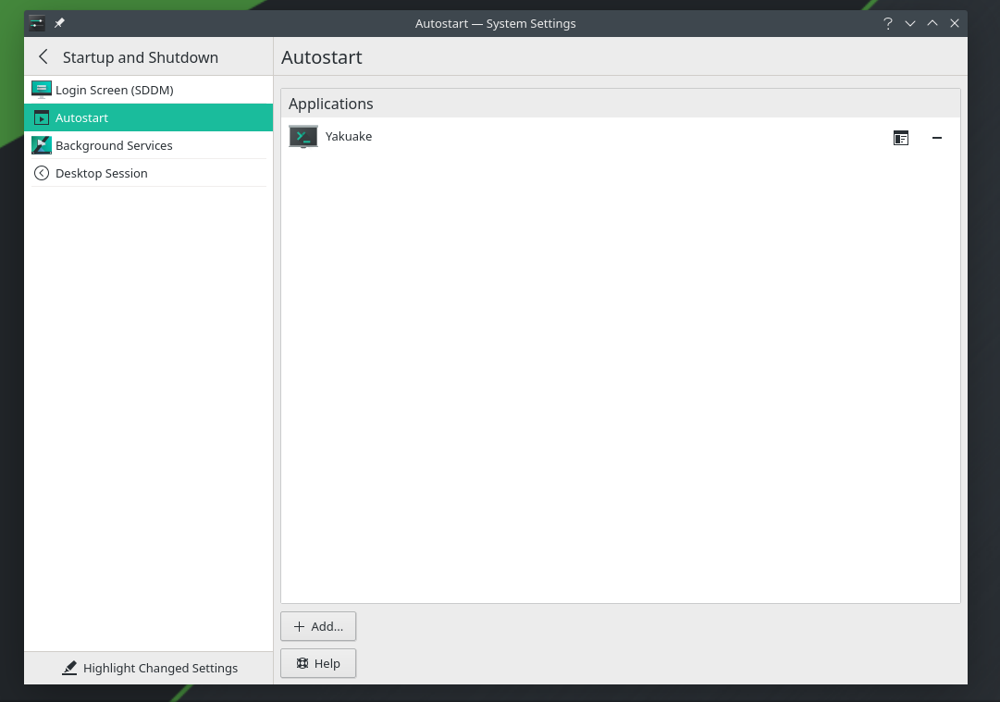
设置快捷键
即点击屏幕左下角的application launcher，或者点击Win建，打开System Settings，选择Workspace => Shortcuts => Shortcuts选项，点击 Add Application选项，添加konsole，并设置相关的快捷键即可。
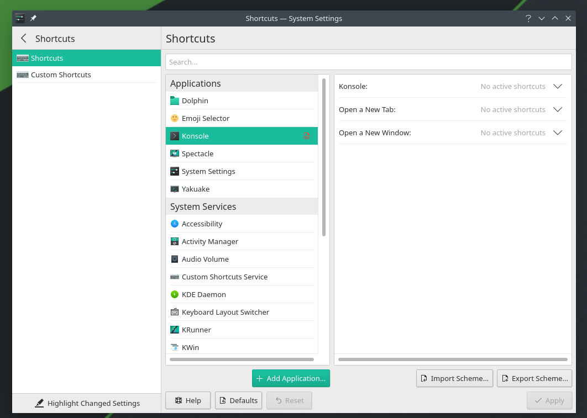
设置字体
打开konsole，在界面上方的Settings => Edit Current Profile，选择Appearance，在Font对应字段进行设置即可
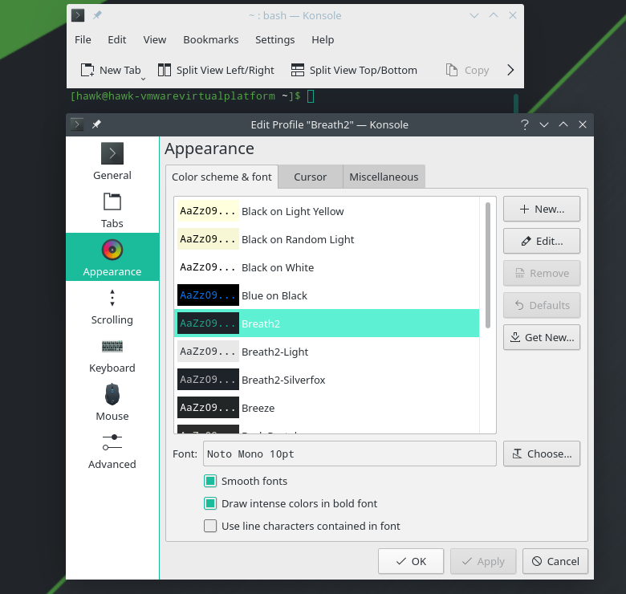
设置护眼
这里使用跨平台的Stretchly软件，进行定时的息屏休息功能
安装Stretchly
首先在链接中，下载Stretchly-[version].pacman文件
在konsole中执行如下bash命令，完成软件的安装1
sudo pacman -U $(ls | grep "Stretchly")
配置Stretchly
首先，设置其为自动启动程序，即点击屏幕左下角的application launcher，或者点击Win建，打开System Settings，选择Workspace => Startup and Shutdown => Autostart选项，添加Stretchly项。
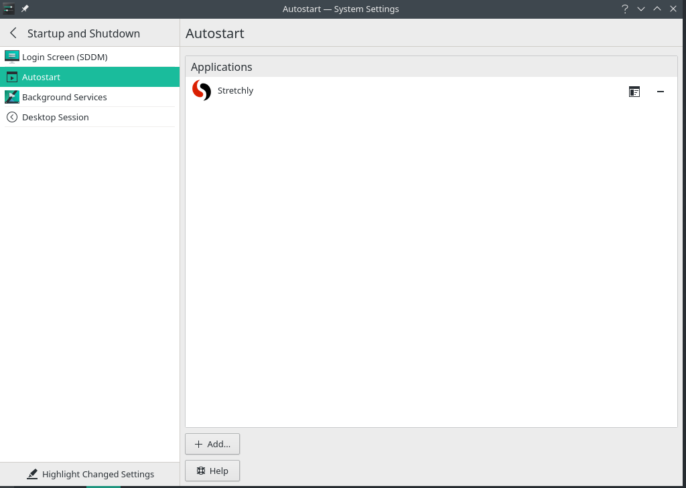
接着启动Stretchly，完成软件的设置即可。即点击屏幕左下角的application launcher，或者点击Win建，在搜索框输入Stretchly，然后点击软件即可。之后按照软件的引导，完成相关的配置即可
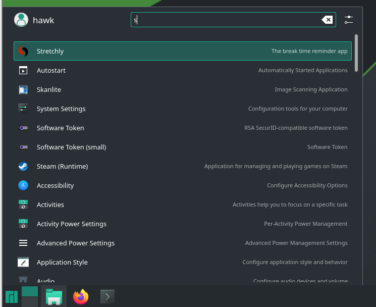
设置python
安装python3
系统已经默认安装
安装pip3
系统已经默认安装
安装python2
在konsole中执行如下bash命令1
sudo pacman -S python2
安装pip2
在konsole中执行如下bash命令1
sudo pacman -S python2-pip
配置pip
在konsole中执行如下bash命令1
2
3python2 -m pip install -i https://pypi.tuna.tsinghua.edu.cn/simple pip -U && python2 -m pip config set global.index-url https://pypi.tuna.tsinghua.edu.cn/simple
python3 -m pip install -i https://pypi.tuna.tsinghua.edu.cn/simple pip -U && python3 -m pip config set global.index-url https://pypi.tuna.tsinghua.edu.cn/simple
有时python的pip会出现相关的错误信息，则执行如下命令重新安装pip1
2
3
4wget --no-check-certificate https://bootstrap.pypa.io/pip/$(python2 -V 2>&1 | sed 's/\./ /g' | awk '{printf("%s.%s", $2, $3)}')/get-pip.py && python2 get-pip.py && rm -rf get-pip.py && python2 -m pip install pathlib2
wget --no-check-certificate https://bootstrap.pypa.io/pip/$(python3 -V 2>&1 | sed 's/\./ /g' | awk '{printf("%s.%s", $2, $3)}')/get-pip.py -O get-pip3.py && python3 get-pip3.py && rm -rf get-pip3.py
然后再执行上述的命令即可
设置C/C++
在konsole中执行如下bash命令1
sudo pacman -S gcc
设置Java
在konsole中执行如下bash命令1
sudo pacman -S jdk11-openjdk
设置Git
安装git
在终端下执行如下命令继续安装1
sudo pacman -S git
初始化用户信息
在konsole中执行如下bash命令，其中相关的参数填写git的系统设置即可1
git config --global user.name "hawk" && git config --global user.email 18801353760@163.com && git config --global core.quotepath false && git config --global core.editor "code --wait"
导出公、私钥
首先，如果没有相关的公、私钥，可以参考帮助链接，生成自己的公、私钥
这里将公、私钥进行压缩，并进行加密处理，在konsole中执行如下bash命令1
read -s -p "Password: " passwd
1 | rm -rf ssh.zip && zip -P ${passwd} ssh.zip -jr ~/.ssh |
导入公、私钥
即导入上述导出的公、私钥，这里给出我自己的加密后的公、私钥
然后对文件首先进行解密处理，最后解压缩即可，在konsole中执行如下bash命令1
read -s -p "Password: " passwd
1 | mkdir -p ~/.ssh && unzip -P ${passwd} ssh.zip -d ~/.ssh |
设置v2ray代理
这里通过安装clash，实现代理上网
下载clash代理
在终端执行如下命令，安装clash软件
1
sudo pacman -S clash
设置clash代理
clash需要yaml格式的config文件，从而完成设置。
我们可以将给定的文件放置在~/.config/clash目录下。如果给的是一个订阅链接，则我们首先根据链接，将设置文件下载下来，然后重命名后放置在~/.config/clash目录下即可
然后，我们通过如下命令，启用指定配置文件的clash
1
clash -f /path/to/config
此时，我们可以登录http://clash.razord.top/网站，进行进一步的设置，如下所示
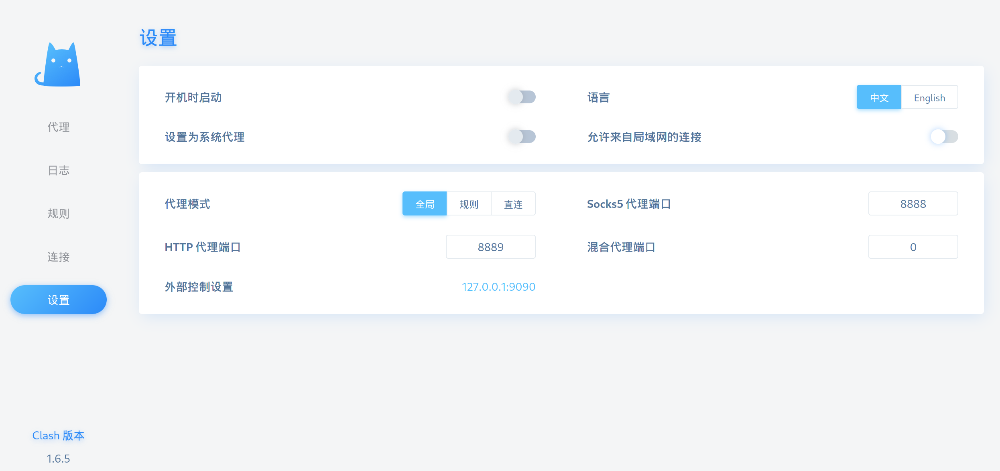
我们只需要将http代理端口和Socks5代理端口特别关注以下即可，然后点击菜单中的代理选项，进行代理即可
配置firefox和proxychains
大部分时候，打开clash，可以实现数据走系统代理
但是类似于firefox、命令行等的数据并不走系统代理，因此需要单独进行设置。
对于firefox来说，通过在Network Settings的proxy即可，如下所示
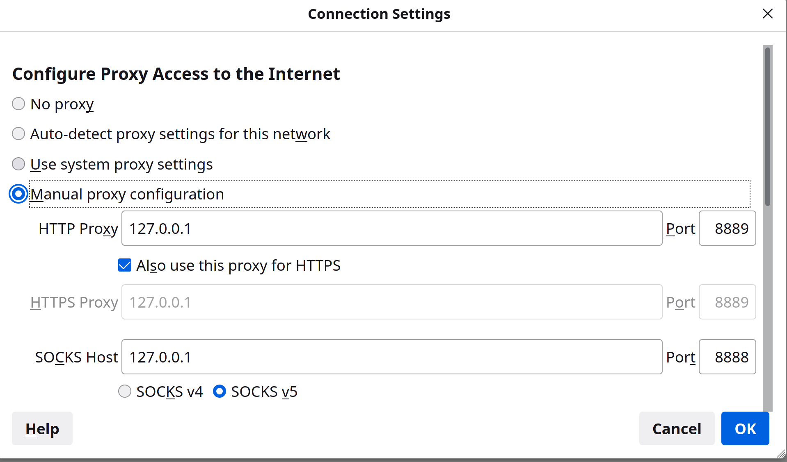
其中，对应的端口是clash监听的本地http端口即可
而对于命令行来说，可以通过设置proxychains完成相关的代理
首先执行如下命令完成代理1
sudo pacman -S proxychians
接着，需要修改全局代理链，将/etc/proxychains.conf文件的代理修改如下1
2[ProxyList]
socks5 127.0.0.1 8888
上述端口为clash中监听的本地socks5端口即可
之后，通过proxychains -q [待执行命令]，完成代理
设置QEMU
qemu是一个广泛使用的开源计算机模拟器和虚拟机
因此，这里使用qemu提供manjaro上的虚拟机功能
安装qemu
这里安装qemu相关的依赖和功能软件包1
sudo pacman -S qemu ovmf bridge-utils vde2 dnsmasq ebtables openbsd-netcat
| 软件包 | 功能 |
|---|---|
| ovmf | UEFI支持 |
| bridge-utils | 网络桥接支持 |
| vde2 | 以太网支持 |
| dnsmasq ebtables | NAT/DHCP网络 |
| openbsd-netcat | ssh连接虚拟机支持 |
安装图形化前端管理
这里选择virt-manager作为管理KVM虚拟机的前端。而virt-manager依赖于libvirt的提供的接口，因此安装virt-manager及其依赖1
sudo pacman -S virt-manager virt-viewer libvirt
然后启动libvirtd服务，并将网络设置为自动启动即可1
2
3
4sudo systemctl enable libvirtd
sudo systemctl start libvirtd
sudo virsh net-autostart default
配置win10虚拟机
下载win10ISO文件
前往ITELLYOU，下载官方win10的ISO镜像文件
下载virtio-win驱动
为了提高虚拟机性能，虚拟机会使用virtIO技术，而windows客户机需要手动安装该驱动
首先，点击链接下载相关驱动
启动virt-manager
执行如下命令启动virt-manager管理程序1
sudo virt-manager
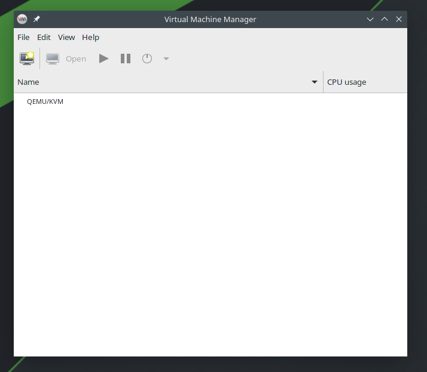
新建虚拟机
在virt-manager界面的上方菜单，点击最左侧的创建新的虚拟机按钮
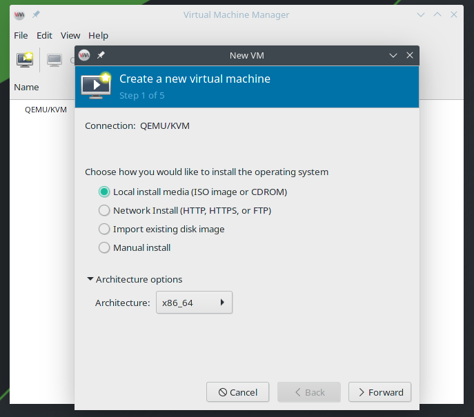
选择从本地镜像安装，x86_64架构，点击右下角Forward下一步
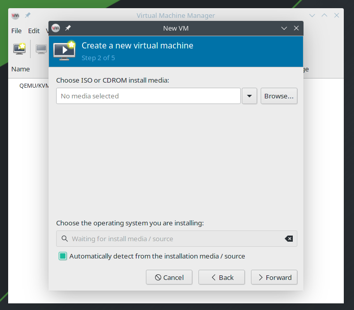
点击该界面上方的Browse界面，选择ISO位置，界面如下所示
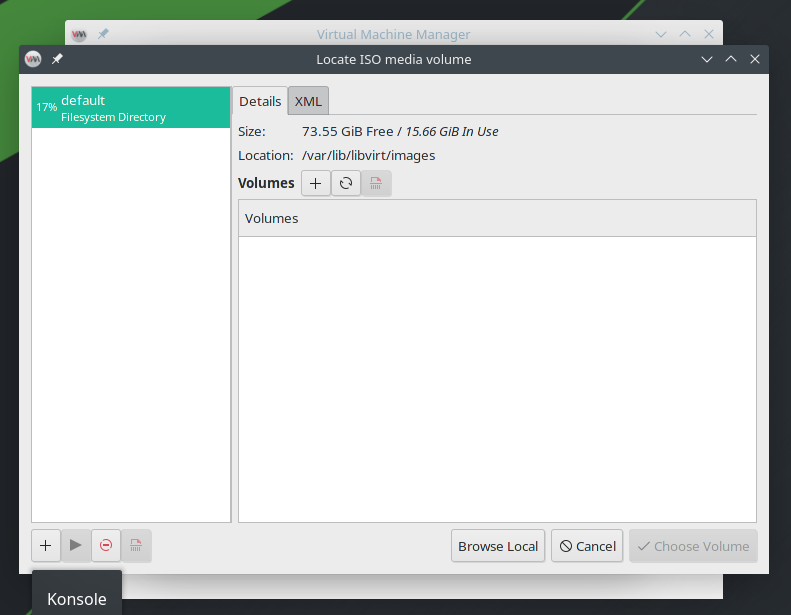
这里选择右下角第一个Browse Local，选择前面下载的win10的ISO镜像即可
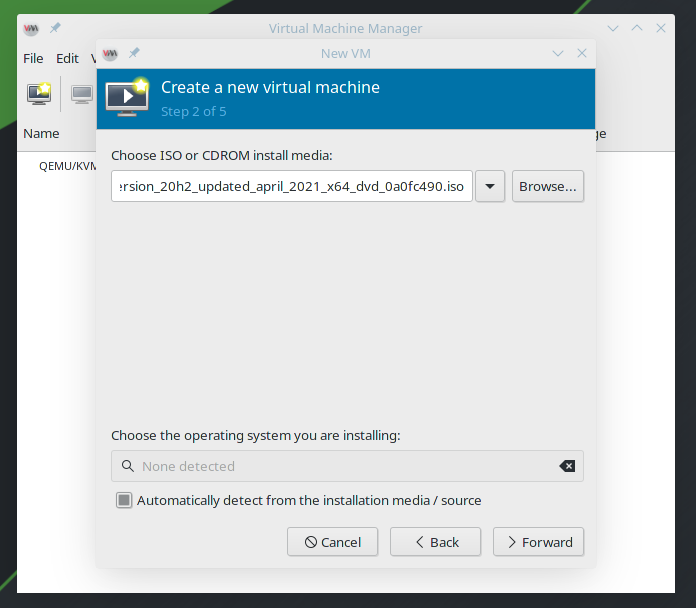
该界面下方取消自动检测系统，直接选择windows10系统
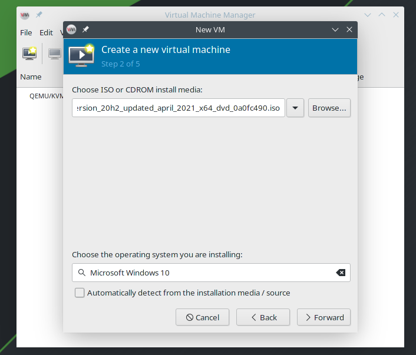
点击右下角的Forward下一步，设置内存和CPU信息
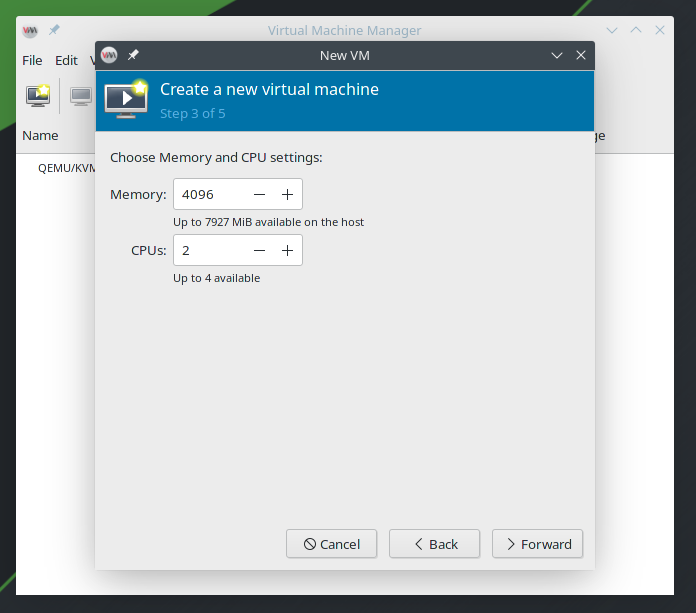
点击右下角的Forward下一步，设置磁盘信息
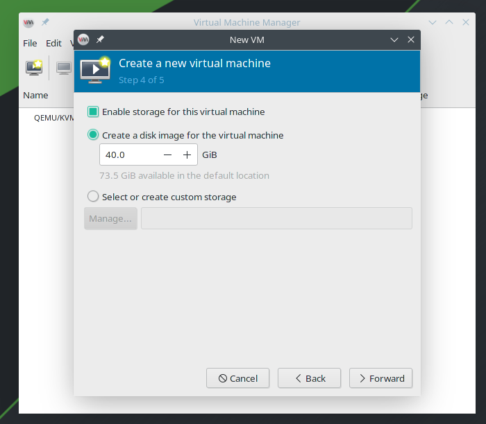
点击右下角的Forward下一步，选择在启动前编辑选项
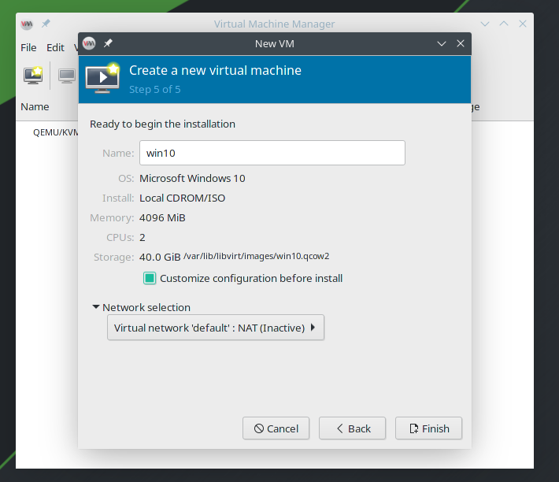
点击右下角的Finish，进入虚拟机的编辑界面，完成相关的编辑
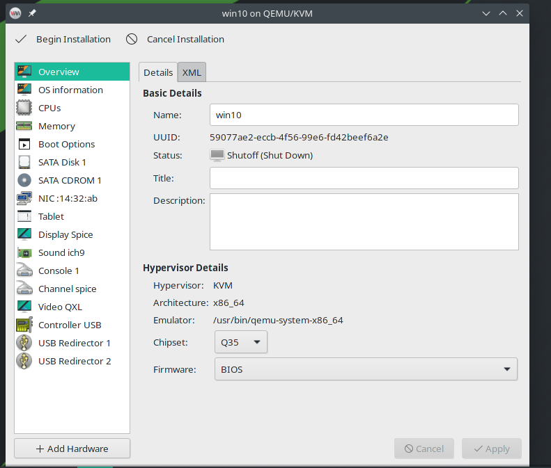
在这里添加另一个CDROM设置，其文件是前面下载的Virtio驱动文件，如下所示
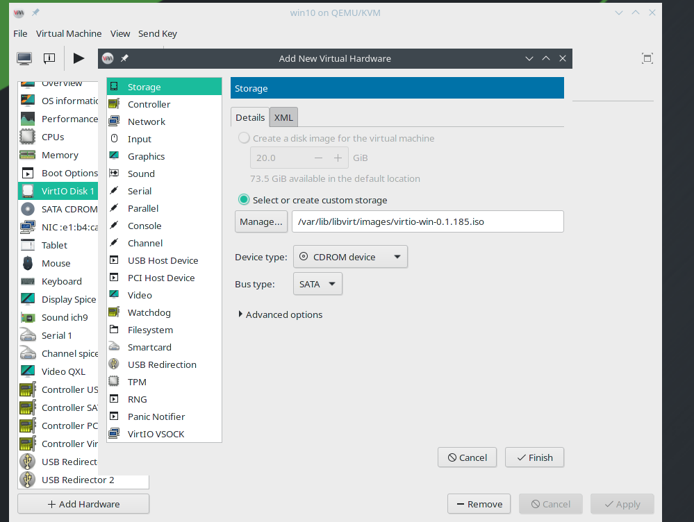
完成编辑后，点击右上角的Begin Installation，完成虚拟机的安装
这里特别说明的是，当进行到你想将Windows安装在哪里时，其无法显示磁盘信息，如下所示
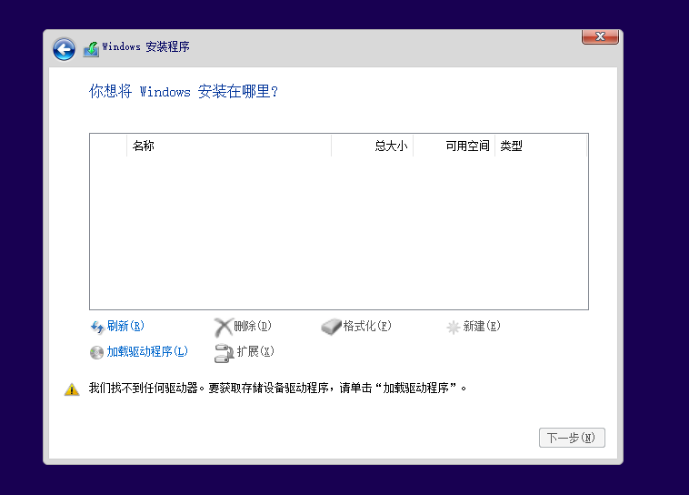
点击左下角加载驱动程序，选择相关的驱动程序安装即可
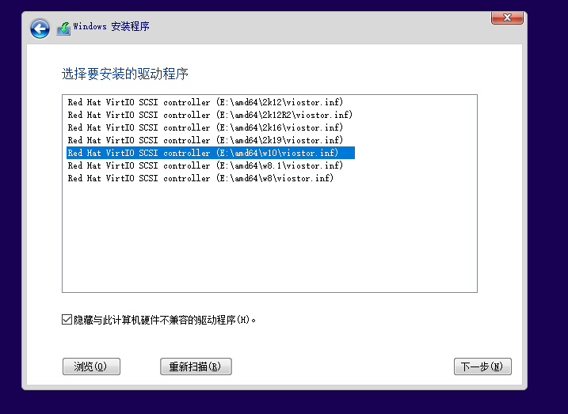
配置VirtIO guest tools
为了启用主机和虚拟机之间的剪切板共享，需要在虚拟机中安装VirtIO guest tools，点击https://www.spice-space.org/download/binaries/spice-guest-tools/下载安装即可
异常处理
Failed to start Load/Save Screen Backlight Brightness of backlight:acpi_video0
这里实际上系统使用了两种服务保存并载入背光设置，一个为systemd-backlight@backlight:acpi_video0；另一个为systemd-backlight@backlight:amdgpu_b10。对于AMD集显来说，第一个出错，会使用第二种设置，则直接mask掉第一个服务即可，在konsole中执行如下bash命令
1 | sudo systemctl mask systemd-backlight@backlight:acpi_video0 |